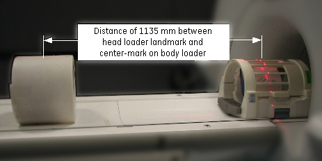
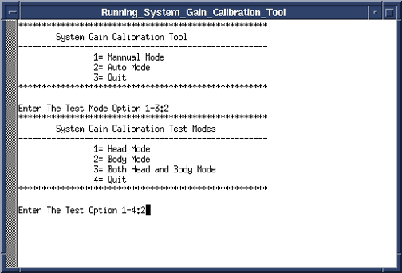
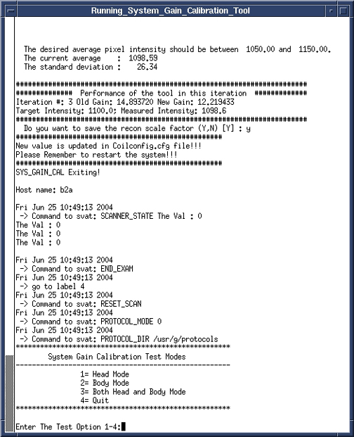

Operating Documentation
Direction 5440001-3, Rev# 6
Signa HDxt Service Methods
Module Version 3.0, Version Date 9/28/10
Operating Documentation |
| Required Persons | Preliminary Reqs | Procedure | Finalization |
|---|---|---|---|
| 1 | Not Applicable | 20 mins | 10 mins |
| Item | Qty | Effectivity | Part# | Manufacturer | |
|---|---|---|---|---|---|
| Body TLT Sphere | 1 | 1.5T | 46-265635G6 | - | |
| SPT Body Loader | 1 | 1.5T | 2135652-2 | - | |
| DQA Phantom with Loader | 1 | 1.5T | 2321556 | - | |
| Head TLT Sphere with Loader for 1.5T | 1 | 1.5T | 2125244 | - | |
| Foam Wedges or Pads | - | - | - | ||
| ||||
| POISON HAZARD! | ||||
| 1.5T Phantoms CONTAIN NICKEL, A SUSPECT CARCINOGEN. | ||||
| DO NOT INGEST. DISPOSE OF AS A HAZARDOUS WASTE ACCORDING TO STATE AND FEDERAL REGULATIONS. |
| ||||
| POISON HAZARD! | ||||
| 3.0T Phantoms CONTAIN Dimethyl Silicon Fluid. | ||||
| DO NOT INGEST. If a leak or spill occurs, wipe up or absorb in inert material and place in a container for disposal. Incineration or landfill is the recommended disposal method. |
| Condition | Reference | Effectivity |
|---|---|---|
Signa software fully operational. | - | - |
Gradient calibration is completed. | - | - |
No image artifacts. | - | - |
The System Gain Calibrations are dependent on the system being landmarked on the Head coil, even for Body Mode only scans. For systems with the new split top head coil, position the coil as if you were scanning the Head portion of the cal as well.
For systems with the quad head coil, position the DQA phantom in the head coil. Turn on the alignment lights and align so the center of the DQA phantom matches the axial beam and landmark. Then remove the DQA phantom.
(For Sites WITH a Nesting Plate) Position Head Sphere and Loader; establish landmark as follows:
Place the SPT Body Loader and Body Sphere after the head coil. See Illustration 1.
| NOTE: | There should be no gap between the nesting plate and the head coil as shown in Illustration 1. |
Illustration 1: Phantom Setup

Landmark on the head coil. As the calibration runs, the table will move to the body coil scan by itself.
(For Sites WITHOUT a Nesting Plate) Position Head Sphere and Loader; establish landmark as follows:
Properly position the Head Sphere and Loader as previously noted.
Establish landmark on the center line of the Head Loader, but do not Advance to Scan.
Run the cradle in so the display reads 1135 mm. (See illustration below.)
Illustration 2: Distance between Head Coil Landmark and Center Mark on Body Loader

Turn on the alignment light and then position the body loader on the cradle so that the alignment light is properly centered on the loader crosshair. Place wedges on both sides of the body loader to prevent movement.
As a final positioning check, ensure that:
The head coil is in position.
The TLT Phantom is all the way in the head coil.
Press [Advance to Scan].
Start the System Gain Calibration Tool.
Starting non-proprietary service tools: From the Common Service Desktop, select [Calibration], [System Gain Calibration] from the calibration menu, and select [Click here to start this tool].
Once the tool starts select option 2<Enter> for Auto Mode.
Select option 2<Enter> for Body Mode only calibration. See Illustration 3.
Illustration 3: Selecting Body Mode Calibration

When analysis is complete, results of the calibration will be displayed on the screen, and if adjustments are required, you will be asked “Do you want to save the recon scale factor”. To save the new calibration file, type “Y” and then press <Enter>. See Illustration 4.
Illustration 4: Calibration Output

To exit the tool, type 4<Enter> .
Continue to System Gain Head Calibration if required.
Remove all phantoms from the system and do a check scan to verify proper operation.